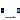

This package contains base classes that are used to construct the models in Buildings.Fluid.Sensors.
Extends from Modelica.Icons.BasesPackage (Icon for packages containing base classes).| Name | Description |
|---|---|
| Partial component to model a sensor that measures a potential variable | |
| Partial component to model sensors that measure flow properties using a dynamic model | |
|  PartialFlowSensor | Partial component to model sensors that measure flow properties |

Partial component to model an absolute sensor. The component can be used for pressure sensor models. Use for other properties such as temperature or density is discouraged, because the enthalpy at the connector can have different meanings, depending on the connection topology. For these properties, use Buildings.Fluid.Sensors.BaseClasses.PartialFlowSensor.
| Type | Name | Default | Description |
|---|---|---|---|
| replaceable package Medium | Modelica.Media.Interfaces.Pa... | Medium in the sensor | |
| Type | Name | Description |
|---|---|---|
| replaceable package Medium | Medium in the sensor | |
| FluidPort_a | port | |
partial model PartialAbsoluteSensor
"Partial component to model a sensor that measures a potential variable"
replaceable package Medium=Modelica.Media.Interfaces.PartialMedium
"Medium in the sensor";
Modelica.Fluid.Interfaces.FluidPort_a port(redeclare package Medium=Medium, m_flow(min=0));
equation
port.m_flow = 0;
port.h_outflow = 0;
port.Xi_outflow = zeros(Medium.nXi);
port.C_outflow = zeros(Medium.nC);
end PartialAbsoluteSensor;

Partial component to model a sensor that measures any intensive properties of a flow, e.g., to get temperature or density in the flow between fluid connectors.
The sensor computes a gain that is zero at zero mass flow rate. This avoids fast transients if the flow is close to zero, thereby improving the numerical efficiency.
Extends from PartialFlowSensor (Partial component to model sensors that measure flow properties).
| Type | Name | Default | Description |
|---|---|---|---|
| replaceable package Medium | PartialMedium | Medium in the component | |
| Time | tau | 1 | Time constant at nominal flow rate [s] |
| Nominal condition | |||
| MassFlowRate | m_flow_nominal | Nominal mass flow rate, used for regularization near zero flow [kg/s] | |
| Advanced | |||
| MassFlowRate | m_flow_small | 1E-4*m_flow_nominal | For bi-directional flow, temperature is regularized in the region |m_flow| < m_flow_small (m_flow_small > 0 required) [kg/s] |
| Initialization | |||
| Init | initType | Modelica.Blocks.Types.Init.I... | Type of initialization (InitialState and InitialOutput are identical) |
| Assumptions | |||
| Boolean | allowFlowReversal | system.allowFlowReversal | = true to allow flow reversal, false restricts to design direction (port_a -> port_b) |
| Type | Name | Description |
|---|---|---|
| FluidPort_a | port_a | Fluid connector a (positive design flow direction is from port_a to port_b) |
| FluidPort_b | port_b | Fluid connector b (positive design flow direction is from port_a to port_b) |
partial model PartialDynamicFlowSensor
"Partial component to model sensors that measure flow properties using a dynamic model"
extends PartialFlowSensor;
parameter Modelica.SIunits.Time tau(min=0) = 1
"Time constant at nominal flow rate";
parameter Modelica.Blocks.Types.Init initType = Modelica.Blocks.Types.Init.InitialState
"Type of initialization (InitialState and InitialOutput are identical)";
protected
Real k(start=1)
"Gain to take flow rate into account for sensor time constant";
final parameter Boolean dynamic = tau > 1E-10 or tau < -1E-10
"Flag, true if the sensor is a dynamic sensor";
Real mNor_flow "Normalized mass flow rate";
equation
if dynamic then
mNor_flow = port_a.m_flow/m_flow_nominal;
k = Modelica.Fluid.Utilities.regStep(x=port_a.m_flow,
y1= mNor_flow,
y2=-mNor_flow,
x_small=m_flow_small);
else
mNor_flow = 1;
k = 1;
end if;
end PartialDynamicFlowSensor;
Partial component to model a sensor. The sensor is ideal. It does not influence mass, energy, species or substance balance, and it has no flow friction.
Extends from Modelica.Fluid.Interfaces.PartialTwoPort (Partial component with two ports).
| Type | Name | Default | Description |
|---|---|---|---|
| replaceable package Medium | PartialMedium | Medium in the component | |
| Nominal condition | |||
| MassFlowRate | m_flow_nominal | Nominal mass flow rate, used for regularization near zero flow [kg/s] | |
| Advanced | |||
| MassFlowRate | m_flow_small | 1E-4*m_flow_nominal | For bi-directional flow, temperature is regularized in the region |m_flow| < m_flow_small (m_flow_small > 0 required) [kg/s] |
| Assumptions | |||
| Boolean | allowFlowReversal | system.allowFlowReversal | = true to allow flow reversal, false restricts to design direction (port_a -> port_b) |
| Type | Name | Description |
|---|---|---|
| FluidPort_a | port_a | Fluid connector a (positive design flow direction is from port_a to port_b) |
| FluidPort_b | port_b | Fluid connector b (positive design flow direction is from port_a to port_b) |
partial model PartialFlowSensor
"Partial component to model sensors that measure flow properties"
extends Modelica.Fluid.Interfaces.PartialTwoPort;
parameter Medium.MassFlowRate m_flow_nominal(min=0)
"Nominal mass flow rate, used for regularization near zero flow";
parameter Medium.MassFlowRate m_flow_small(min=0) = 1E-4*m_flow_nominal
"For bi-directional flow, temperature is regularized in the region |m_flow| < m_flow_small (m_flow_small > 0 required)";
equation
// mass balance
0 = port_a.m_flow + port_b.m_flow;
// momentum equation (no pressure loss)
port_a.p = port_b.p;
// isenthalpic state transformation (no storage and no loss of energy)
port_a.h_outflow = inStream(port_b.h_outflow);
port_b.h_outflow = inStream(port_a.h_outflow);
port_a.Xi_outflow = inStream(port_b.Xi_outflow);
port_b.Xi_outflow = inStream(port_a.Xi_outflow);
port_a.C_outflow = inStream(port_b.C_outflow);
port_b.C_outflow = inStream(port_a.C_outflow);
end PartialFlowSensor;